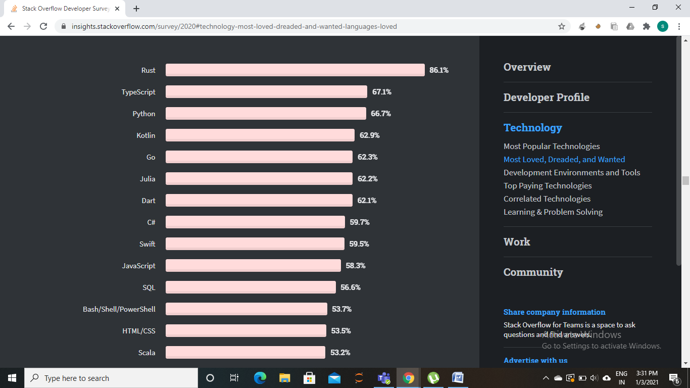
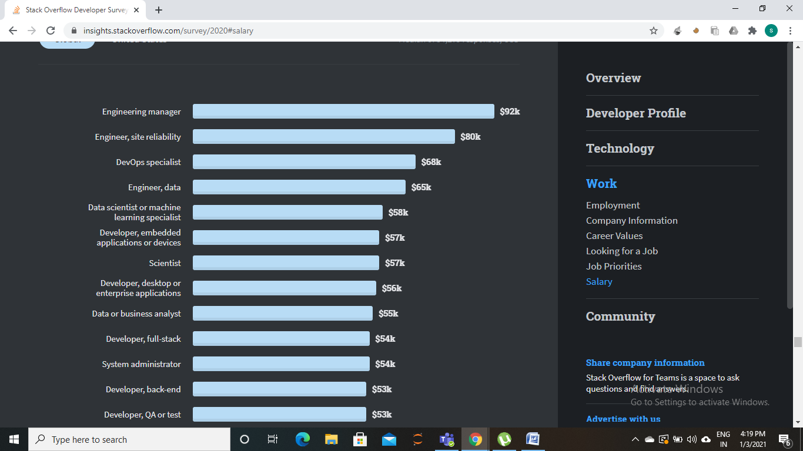
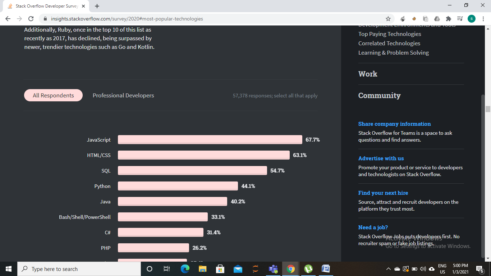
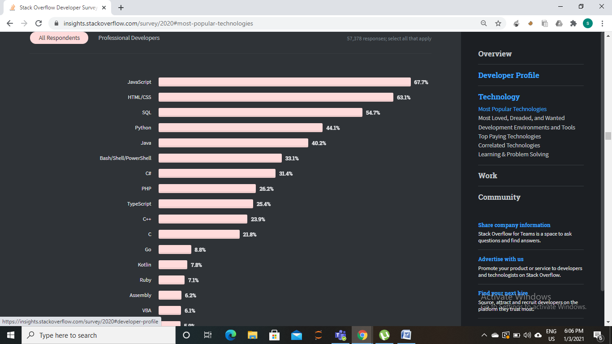
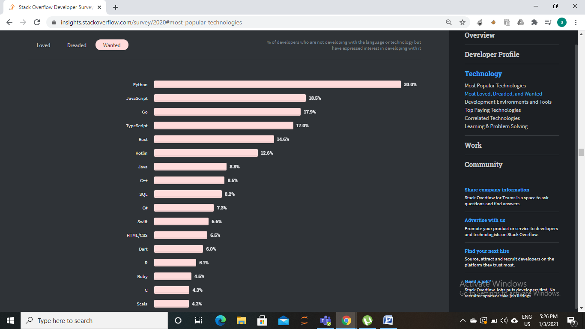

Top 5 Programming Languages To Learn in 2021
We all are aware of technology and its development at an alarming rate. It's prevalent to see one technology overpassing the other with great updations and developments. To keep ourselves in the field of technology, one thing always remains intact - learning a programming language.
Nowadays, the programming language is the basic building block of any technological development. It's a pre-requisite of any major coding field. For example:- for machine learning, you need to learn languages like python, R, etc.; for web development, you need to learn HTML, CSS, JavaScript, etc., and the list goes on. If you are in this field, you should not know just one programming language. At the same time, you don't want to be an excellent example of the famous saying, "Jack of all trades master of none."
To ensure that you are not a jack of all trades and a master of none, you should start by learning one language to perfection and developing a good command. You can then move forward to the next one and so on. In this way, you will gain good practical knowledge of different languages over time.
I know you must question that there are 1000+ languages; So should I learn all languages?
The answer is a big No! Learning a language depends upon the domain you are interested in.
But if you haven't decided on a domain yet, you are in a perfect place because I have created a list of the top 5 programming languages you should learn in 2021.
I have made this list with various online reports and surveys, such as the famous StackOverflow Developer Survey 2020.
Let's get started with the list of my language recommendations for 2021:
1. Python
The canonical, "Python is a great first language," elicited, "Python is a great last language!"
The above phrase is justice to python. Python has been a scorching trending topic for the last few years, and it will surely be at the top of the hill in 2021.
But why? Why is python so famous? Or Is it hyped?
Python is very famous because of its easy syntax, which is very close to the natural language. Because of the ease of learning, it is very much loved by beginners as well as professionals.
In a StackOverflow developer survey, python is listed among the top loved programming languages.
Not only that, Python is extensively used in machine learning. According to the StackOverflow developer survey 2021, the machine learning job profile is also one of the highest paying jobs in recent years.
Python has excellent libraries like sci-kit learn, PyTorch, Keras, Pandas, Numpy, and many more, which makes machine learning very easy and fun at the same time. On top of that, Python has excellent community support and is supported by giants.
So starting to learn Python would be an excellent choice for you.
2. Javascript
"Javascript is the duct tape of the Internet."
Charlie Campbell quoted the above line. Javascript has gained a lot of popularity in a shorter period. In the early 2000's big giants like Google, Microsoft started using JavaScript for the backend.
What makes javascript so famous?
JavaScript allows scalability needed in cloud computing and back-end programming. It has the feature to communicate with other languages and communicate with databases.

Due to its splendid features and significant usage, javascript has maintained its top position for the 8th year in a row.
If you are into the web development field, then javascript is of great use for you; along with HTML & CSS, you can develop unique projects as a beginner.
With javascript language, you can develop web applications, desktop apps, server backends, and mobile apps, which hardly any language provides.
3. Java
We have often seen java losing its essence. However, when we look at the statistics, java is still among the top. It is still used by many big giants, which proves that language is always beneficial and in demand by the tech world.
The main advantage of java is that it provides security, unlike other languages.
Java runs on a virtual machine(JVM). It verifies the byte code and makes sure no unsafe operation is executed.
Other benefits of java include:
- It's easy to learn
- Object-oriented
- Platform independent
If you want to learn android development, then java is a great language that you can look upon, and it's also an excellent language for a beginner to learn to program.
Let's look up the ranking of java in the StackOverflow developer survey-
Around 40% of developers use java, which is more than 8 million developers. So learning java would give you a great start in your work because companies like Amazon, Adobe use java and provide excellent job offers for Java programmers.
Java has got generous community support, and its frameworks are prevalent. So if you want to learn java, you can go ahead. It will provide you with a promising career.
4. C/C++
The next programming language to learn in 2021 is everyone's favorite C/C++
C/C++ is like old wine, it never loses its place, and it gets more and more demand. It's another primary language in need for a very long time, and it will be in the market in the future.
It's a perfect language for beginners to start learning because it will help you understand computers' functionality. Not only that, some big firms provide a good package for c/c++ developers. As a beginner, learning DSA in C/C++ will be very beneficial to you.
The main advantage of C/C++ is its fast execution speed compared to python. If you want better use of your computer resources like game development, it's a great language.
And if you want to step into competitive programming, C/C++ is an excellent choice because its standard template library is fantastic!
More than 23% of developers use C/C++, so if you prepare for placement or internships, try this language and clear your concepts.
5. Dart
Dart was introduced on 10th October by two Google engineers at the goto conference as a new language designed to build web applications. It's a very young language, and it's getting great popularity now!
DART is a flexible language; you can use dart with flutter to make a cross-platform application that can run on any device: iOS and Android. Dart embraced the open-source system, which helps it to achieve excellent community support also. It's pretty easy to learn and can be learned as a first language. Along with the clean & concise syntax, it's also got more productivity with the help of an extensive collection of libraries and frameworks packed with it.
Conclusion:
These were the top 5 programming languages that you can look upon to learn in 2021.
But if you want to learn another language in which you are comfortable, then stick to it, learn it and make a profitable career growth. What's important is to stick to a plan, make steady progressive steps, and achieve the ultimate goal.
So that's pretty much. I hope you like this article.
And if you want to learn any language, there is a one-stop destination: CodeWithHarry YouTube.
Follow and subscribe to the channel for some great content ahead.
Thank You!